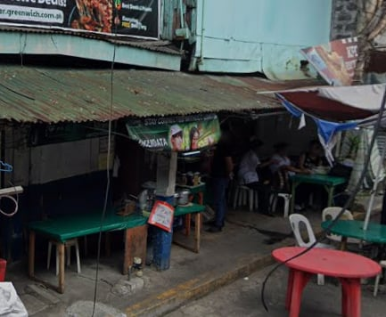

01
Mami Karenderya
Budget-friendly Filipino food near TUP Manila.
I like eating at Mami Karenderya because the food is simple, filling, and affordable. It is one of my choices when I want a quick meal after class. I also like that I can enjoy a satisfying meal without spending too much.